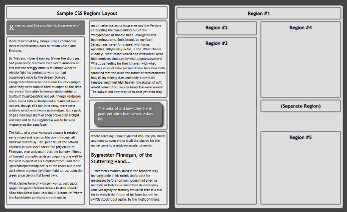
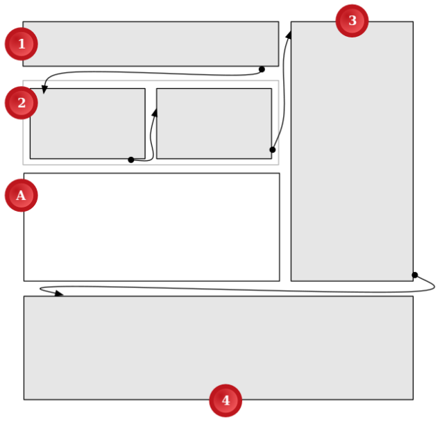
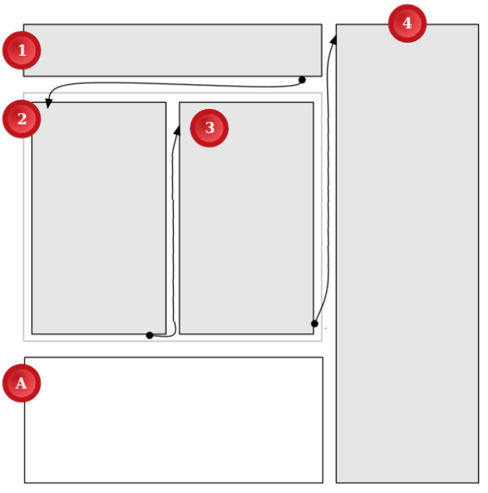
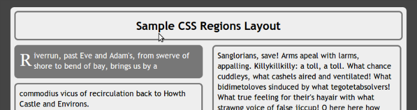
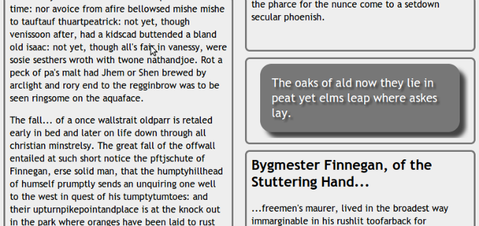

Håkon Wium Lie is the father of CSS, the CTO of Opera, and a pioneer advocate for web standards. His last article in this magazine led directly to real fonts on the web. When Håkon speaks, whether we always agree or not, we listen. In today’s post, Håkon shares his opinion on CSS Regions.
Way back, when designers first started emigrating from their islands of desktop publishing onto the web, they asked a seemingly simple question: how could they take with them their favorite colors, fonts and layouts? At first, we had no good answer. HTML offered semantic tags to describe the structure of documents, not their presentation. Browsers couldn’t be told what fonts to use, or where to fetch them. Authors, however, soon found a sneaky shortcut: the img element. By making images of their text, authors could achieve their colorful helveticized designs. In the process, all semantics (that is, information about the meaning of elements, as opposed to the presentation) was removed and even the searchable text was gone. CSS was proposed in 1994 to stop this practice; saving semantic HTML was just as important as achieving desirable layouts.
A few years later, at the height of the XML fever, presentational elements made a comeback. XSL defined an XML vocabulary for Formatting Objects; XSL-FO tags that said nothing about being headlines or list items, but all about their presentation. Computer scientists have a peculiar way of expressing fear and doubt. They publish essays with “considered harmful” in the title. This particular design pattern was started by Edsger Dijkstra when he published “Go To Statements Considered Harmful” in 1968. The development of formatting objects led me to use the same device; “Formatting Objects Considered Harmful” argued that formatting objects were font tags in disguise and that their use on the web must be avoided to preserve web semantics.
It seems that proposals for presentational elements return every so often. The most recent incarnation is CSS Regions. One should not write “considered harmful” articles lightly, but presentational elements is not the only problem with CSS Regions. For those who believe in meaningful HTML tags, responsive web design, and compact CSS code, the introduction of CSS Regions is not good news.
Problem #1: regions use dummy divs
Some articles on CSS Regions have already looked at the source code. An article published by WebPlatform.org describes how to achieve a commonly used two-column design:

a sample document with columns of text and a view of the CSS region layout
The formatted document is on the left, and the corresponding regions are shown on the right. The HTML code that generates this layout must be studied in order to understand CSS Regions. Here’s a snippet:
Region #1
Region #2
Region #3
Region #4
(Separate Region)
Region #5
The elements above represent regions, which are containers where text can flow from one to the other. Here is some of the corresponding CSS declarations for the #intro element:
#intro {
width: 45%;
position: absolute;
top: 5em;
height: 3em;
-webkit-flow-from: main;
-ms-flow-from: main;
flow-from: main;
}
The CSS code above says, roughly: turn the #intro element into an absolutely positioned element with a given size and position, then discard the content of the element and replace it with content from the flow called “main”. Thus, the h1 element inside #intro isn’t a headline at all—the div element is a presentational container and the h1 element is discarded.
The proponents of CSS Regions might argue that, “Yes, the divs are there for presentational purposes, but only elements can be scripted on the web and we must therefore use elements.” This underlines an important point: it’s not regions per se that that are harmful to web semantics, it’s the fact that they are encoded as presentational HTML elements. If we want regions on the web, we should find a way to write them in CSS and not in HTML. If CSS Regions are accepted in 2014, we will be stuck with absolutely positioned dummy divs for the foreseeable future.
Not all web designers are concerned about semantics. If regions can provide the design tools they crave, a few dummy divs are worth the cost to some. Therefore, let’s analyze CSS Regions from a web design perspective. Do CSS Regions make good websites?
Problem #2: regions are not responsive
Responsive design is a hallmark of good web design. We want our sites to be scalable across a wide range of devices; from small mobile phones, to smarter phones, to big screens. Columns are a neat way of using the full width while keeping line lengths down. The example from the WebPlatform article flows its content into two columns. The width of the columns are set in percentages (45 percent, as can be seen in the example above). That provides for scaling as the two columns will grow with the width of the screen. But, there will always be two columns. Even on a very narrow screen, the example will not change to a one-column layout.
Ideally, you want the number of columns to be dynamic so that a narrow screen has one column, a medium screen has two columns, and an ultra-wide screen has three, or maybe four columns. CSS Regions will not give you this. Another CSS specification, however, describes how to achieve pages with scalable number of pages:
four views of a web page demonstrating different numbers of columns for different window sizes
The samples above are produced with CSS Multi-column Layout, a specification for which I am the editor. And here is the code:
article {
columns: 20em
}
The snippet above tells the formatter that the optimal line length is 20em, and that the number of columns should be computed accordingly. Thus, on a small screen you will have one column, on a wider screen two columns, etc. In effect, multi-column layout automatically creates the optimal number of connected regions needed to display the content. No presentational elements are needed to represent these regions—they are automatically created.
Can this kind of automatic layout of regions can also be a limitation though? Authors should be allowed to place regions far apart, shouldn’t they? This question brings us to the next section.
Problem #3: confusing text flow
Specifications often start out with a motivational example to show how powerful the proposed functionality is and how easy it can be achieved. The first example of the CSS Regions specification is shown below:

diagram of a page with a confusing visual text flow
The text flow moves from region 1, to 2, 3, and 4, following the arrows. Notice how the eyes of the reader will have to traverse sideways, in the opposite of the reading direction, from 3 to 4. These kinds of traversals are not common in newspaper design, and I will argue that they are confusing to readers and should be avoided. CSS Multi-column Layout cannot make text flow this way, and I consider that to be a feature.
In my (arguably quite memory-constrained) mind, it would be far better to put the figure (A) at the bottom of the page and stack the columns in the reading direction left to right. Like this:

diagram of page with an improved visual text flow
In this design, the maximum length that the eye would have to traverse backwards is the length of the line. This design can easily be achieved in CSS Multi-column Layout. Thus, in my experience, CSS multi-column layouts can do most of the things that designers plan to use regions for. If you cannot achieve your preferred columns using CSS Multi-column Layout, you should probably reconsider it.
Amongst the problems discussed in this article, this is probably the one I’m least worried about; if enough users are confused, the design will change. But it seems wasteful to invest years of efforts to implement CSS Regions if most of the compelling use cases can be achieved through an existing mechanism.
Problem #4: verbosity
The motivational example from the Regions draft also has some sample CSS code attached. The CSS code is shown in an appendix, probably because it’s too long to display at the beginning of the document. The CSS code uses 26 lines (after removing comments and blank lines). In addition, there are seven lines of HTML code for the dummy elements, bringing the total to 33 lines.
How many lines would it take to encode the more intuitive design (shown in the figure above) using CSS Multi-column Layout? Three, it turns out:
article { columns: 20em }
h1 { column-span: 2 }
img { column-span: 2; float: bottom }
For this example, using CSS Regions is a magnitude more complex than using CSS Multi-column Layout. If one were to support one layout on small screens, and more columns on wider screens, the code size for using CSS Regions would grow quickly.
(I must add that my favored code examples in this piece use features not just from CSS Multi-column Layout, but also from CSS Figures, which add integer values to the column-span property, and top and bottom to the float property.)
Problem #5: code reuse
Returning to the article on CSS Regions, consider the top part of the formatted article. The #intro element discussed above is a region set to contain the introduction, shown in white on a dark background. Notice how the text flows from the dark box to the next region under it.

top of the CSS Region sample document
Do your eyes follow? Do you know where the introduction ends? Admittedly, the first sentence of Finnegan’s Wake isn’t a traditional introduction, but consider how this will be used for more traditional articles. Personally, I feel cheated when big-font introductions turn into small-font body text in the same sentence. As a reader, I’d like to know where the introduction starts and where it ends and believe it should end in a complete sentence. Most publications use my favored style, while some style a box of a certain size like in the above example. These publications will be tempted to try CSS Regions.
However, I don’t think they will be happy with using CSS Regions this way. It’s problematic to assign style to a box because authors do not know how many lines of text will fit into the box. A common problem with absolutely positioned elements is that the text doesn’t always fill the box as the author intends. Often there will be unused white space at the bottom of the element. The same will happen when authors start using CSS Regions to style the first (say) five lines of text; perhaps only four lines will fit and there will be a visual jump to the rest of the text.
A similar problem appears in the pullquote that appears in the right column:

portion of CSS Region sample document with pullquote
The pullquote starts with “The oaks…” in the image above. The region it lives in has a size just big enough to hold the text. An authoring tool may compute the size of the box and create a custom-made stylesheet. However, in order for the document to be presented “correctly,” the text must remain unchanged (no translations, please!), the same fonts must be available (please do not turn off downloadable fonts!), and the user must not increase the minimum font size (please bring your magnifier!).
Stylesheets written this way will not be reusable, each new document will have its own.
Harmful?
CSS Regions were proposed by Adobe in 2011 and the company is still its main proponent. It’s laudable that Adobe takes the web seriously and that it brings proposals to W3C—certainly much better than pushing a proprietary technology like Flash. Its motivation is to sell authoring tools that generate CSS code. That’s good, too—the web needs good authoring tools and Adobe can make them. But CSS Regions, as currently proposed, will not improve the web. Rather, it brings presentational tags, verbose code, and per-document stylesheets.
Recently by Håkon Wium Lie
Ten CSS One-Liners to Replace Native Apps
Håkon Wium Lie is the father of CSS, the CTO of Opera, and a pioneer advocate for web standards. Earlier this year, we published...
Our upcoming December 2nd event
Ask Dr. Web—Live
Design your career like you’d design a website. Join our fearless leader Jeffrey Zeldman and his co-host Sarah Parmenter for a live Q&A—and learn how to build your career and get the projects and positions you want.
About the Author
Håkon Wium Lie
Håkon Wium Lie proposed CSS in 1994 and is still hard at work on CSS specifications. He is the CTO of Opera Software and a champion for CSS compliance in all browsers. Lie is also a director of YesLogic, the company behind the CSS-based Prince formatter, which was used to produce a book he co-authored: Cascading Style Sheets: Designing for the Web. He has a Masters degree from the MIT Media Lab and a PhD from the University of Oslo. He is an advocate of Acid2, the video element, web fonts, and growing apples. Real apples.
MORE FROM THIS AUTHOR
Ten CSS One-Liners to Replace Native AppsCSS @ Ten: The Next Big ThingPrinting a Book with CSS: Boom!
Get our latest articles in your inbox. Sign up for email alerts.
51 Reader Comments
Alan Stearns 1 12:34 pm on January 22, 2014
I’m planning on a longer response a bit later, but I want to start with this question: do you consider Web Components harmful? It seems to me that many of your arguments against Regions also apply to Web Components.
EMBED
François REMY 2:15 pm on January 22, 2014
Most of your arguments look to be just about samples that do not make correct use of the css-regions properties. Those are not real websites or real layouts, it’s just some engineer showing a property works. We all agree most engineers suck at UI, right?
For example, when you say the regions-sizes-and-divisions cannot be made dependent on the actual content, it’s false; you can decide to have auto-sized regions and prevent from breaking somewhere using the “break-inside: avoid”, as well as forcing a break anywhere using “break-after: /*to next*/ region” and “break-before: /*to next*/ region”.
You can also make the number of regions and their layout vary with media queries, it’s inaccurate to say anything else. When the number of regions isn’t known in advance it -means- that you can generate the region anchors using “overflow: fragments” already.
That being said, I’ve to agree people at Adobe tend to overuse CSS Regions in places where CSS Regions do not belong, and where multicolumns and exclusion would do a better job. This is a fact, but this is normal, everyone will consider its “specification babies” before considering alternatives.
Yet there are a very broad range of valid use cases that no other combination of CSS Specifications and Proposals can solve without a named flow concept, even your very own proposals.
EMBED
Spencer Norman 2:22 pm on January 22, 2014
I agree with the major points of your article. From this perspective, it makes CSS regions feel like they are a big step backwards in the battle to separate presentation and content and some of it seems eerily similar to the pre-div era.
I’m curious though, what are the major advantages to CSS regions? This article seems to focus on one specific area where it seems obvious that another tool such as multi-column could do a better job. I appreciate that this article is able to layout some big concerns but I don’t know many designers or developers who are using well-written, concern-separated, code who would jump on the region bandwagon if it really does add so many lines of code to our stylesheets and break responsive layouts.
I feel that there is some story not being told here about the CSS regions - perhaps there is a more proper way to use them?
I love the Multi-Column Layout proposal as well, seems simple, clean, and keeps my styles and content out of each other’s way.
EMBED
Håkon Wium Lie (article author) 3:55 pm on January 22, 2014
Hello François,
Thanks for your comments. Indeed, media queries can be used with CSS Regions—I refer to this when saying: “If one were to support one layout on small screens, and more columns on wider screens, the code size for using CSS Regions would grow quickly.”
It’s also true that regions breaks can be set. Do you think this solves the problems? I challenge you to write a compelling CSS Regions example that addresses the problems that I pointed out!
EMBED
Alan Stearns 1 4:06 pm on January 22, 2014
So I have to respond to the title with “Considered Harmful” Essays Considered Harmful
I think your article is a fine summary of the arguments you’ve made on the www-style list about CSS Regions over the past few years. It may surprise you that we have been listening and have made changes to CSS Regions based on your feedback (though I have mentioned this before). Some of your points above aren’t quite current, as the proposal has evolved along the way. I think the main point is #1 - all the rest are either inaccurate or the problem really points back to #1.
On Problem #2, you seem unaware that we’ve been talking about responsive layout with CSS Regions ever since Chris Coyier found a neat way of combining quite different desktop and mobile layouts in the same markup. Razvan Caliman has shown quite a few examples of responsive UI using Regions as well. Regions can be used extremely well in responsive layouts. I agree that a standard multicolumn layout is still best done with multicolumn, though.
On Problem #3, you made that point quite a while back, and I made changes to the example to address your concern about ten months ago. Region 3 is tall enough so that you never see Regions 2 and 4 on the same screen (the layout adapts to screen size). But as François notes, this is an engineer’s example. I’m no designer :)
On Problem #4, we’ve gone back and forth over code examples quite a lot. There are some who find float layout intuitive and simple (including the extensions to floats that you’re proposing) and others who have moved on from float layout to Flexbox and who are hotly anticipating Grid Layout. CSS Regions is built to take advantage of any layout system we devise for CSS. There are really just two properties to keep in mind, expressing *what* (flow-into) goes *where* (flow-from).
EMBED
Alan Stearns 1 4:08 pm on January 22, 2014
(I’m getting too long-winded for the comment box)
On Problem #5, you’re critiquing a tutorial layout meant to introduce the concepts of named flows. I think Mike is a great technical writer, but he may be even less of a designer than I am. I’d much rather see your critique of CSS Regions designs from actual designers. You seem to be unaware that regions can automatically size to fit the named flow content, and that region breaks (or even a separate named flow declaration) can control what goes into a pullquote. All of the examples I linked to above have stylesheets that are completely reusable.
EMBED
Gerrie Diaz 4:20 pm on January 22, 2014
Is there a solution to the issues you expose? I didn’t read all the comments. A section labeled “Proposal” or “Solution Suggested” would cap off this write-up.
EMBED
Max Vujovic 4:54 pm on January 22, 2014
A few reactions…
“Problem #2: regions are not responsive” -
Regions are responsive! Designers can use percentage sized regions and define different layouts for their content using media queries, among other techniques. Regions are all about designer control. Naturally, you get responsiveness for free using CSS Multicol because it makes most of the decisions for you. These two features are not at odds. They complement each other nicely. Regions is for complete design control. Multi-column is for quick, simple use cases.
I found the video Alan that pointed out pretty compelling. CSS Regions definitely enables beautiful responsive layouts:
http://www.youtube.com/watch?v=SEDphxe1uXw
“Problem #3: confusing text flow” -
With great power comes great responsibility. Of course it’s possible to misuse any powerful feature. That doesn’t mean we should keep great power out of the hands of talented designers. Imagine if you told print designers they could only make evenly sized, adjacent columns. Boring!
“Problem #4: verbosity” -
Naturally, CSS Regions are more verbose than CSS Multicol because they are much more expressive, generic, and powerful. CSS Multicol makes most of the decisions for designers, so obviously there isn’t much left for the designer to specify. These features target different audiences. If you need simple columns, definitely use CSS Multicol. If you need a rich, magazine-like design, use CSS Regions.
Let’s look at real-world magazine design. With a quick Google Image Search for “magazine design”, it’s obvious that CSS Multicol is insufficient for almost every layout:
https://www.google.com/search?q=magazine+design&tbm=isch
I’d say CSS Regions covers the 80% of use cases. CSS Multicol covers the 20% of simpler use cases.
Personally, I’m really excited to see real magazine layout coming to the web with CSS Regions. It’s about time!
EMBED
Håkon Wium Lie (article author) 5:12 pm on January 22, 2014
Hello Alan,
On #2, indeed, one can provide two different presentations and swap one for another using media queries. That’s a very powerful mechanism. But it leads to verbose code, and I’d argue that it’s better when the mechanism itself scales. Lots of people will use Regions to create multicol layouts, just like the good people at WebPlatform did. I’m happy you see there is a better alternative. What kind of code will Adobe’s tools generate?
On #3, you set the height of the grid to “110vh;”. This makes the grid taller than the screen, which solves some problems, but create others. For example, if you try to reuse that style sheet for a short article, you would end up with white space, no? Is there an implementation that renders your first example as you would like to see it?
On #4, verbosity, you seem to be saying that using Grid or Flexbox will create more compact code? Could you encode the example at hand using your favored technique? I challenge you to write it in three lines :-)
On #5, I don’t think the problem is (nor have I criticized) the design used in WebPlatform’s article. I fear that the problems are much deeper than something that can be fixed by a designer. For example, how would you encode the pullquote example in a way that does not lead to overlapping text or blank areas when the text changes?
EMBED
Håkon Wium Lie (article author) 5:23 pm on January 22, 2014
Hello Max,
It’s fun to code up use cases, including magazine layouts. Could you point me to, say 5, of the images that come up in your search that cannot be encoded in multicol?
As for media queries: yes they can be used to switch between different designs. But many designers will forget that not all have as big screen as they do. And, will the customer pay for web designers to do double work? I fear that many devices will be left in the dark unless we find mechanisms that automatically scale. CSS Multicol layout does this beautifully, CSS Regions do not.
EMBED
Håkon Wium Lie (article author) 5:26 pm on January 22, 2014
Hello Gerrie, I point to the CSS Muliticol Layout and CSS Figures specifications as possible solutions for many of the things people are trying to solve with CSS Regions. Here are the specifications:
http://www.w3.org/TR/css3-multicol/
http://figures.spec.whatwg.org/
EMBED
Alan Stearns 1 5:32 pm on January 22, 2014
Håkon, on #2, take a look at the examples I linked to. In Razvan’s examples you get very responsive UI capabilities using one CSS Region. This one region is defined by an element, so the solution runs up against your problem #1. I think for these cases the tradeoff between functionality and separation of concerns is worth it.
This is why my initial response was to ask about Web Components. In an HTML Template you can define presentational boxes in markup. This also violates SoC, but again I think the tradeoff is worth the compromise.
EMBED
Tweety Wheaty 6:11 pm on January 22, 2014
I think this post will go down in history as the one that introduced the concepts of Figures to the general dev public. Amazing stuff, I’d never even heard of it. I only wish you had highlighted Figures more in the article, because it addresses many of Regions’ use cases in (what is to my eye) a more elegant, reusable form. I can’t wait for:
http://caniuse.com/css-figures
:)
In practice, I must say I’ve found multicol to be incredibly fiddly and error prone. I love the idea in principle, but there are currently so many glitches, gotchas, and rounding errors that I will continue to avoid it for the foreseeable future for production code. I agree with the basic premise that making multicol better should be as high a priority as regions. It seems to have drifted slightly off the development map, with longstanding bugs stagnating.
EMBED
Sunny Kalsi 2:36 am on January 23, 2014
From this article, I really like multicol. It seems to be a far more scalable and elegant solution. I only really have one problem with it, and I suspect that it is the one the regions are trying to solve.
Let’s say you have semantic text, a long article or something, but you want to “break up” the monotony of the text with something else. Sometimes that’s necessary (like an aside, or some “useful factoids”), and other times it’s forced (like an ad). Either way, you’re trying to really pull two things apart that are semantically the same and shove in something unrelated precisely because it’s unrelated. On different devices, this unrelated thing may or may not be a good thing to display at a particular place, or at all. This has been a weakness in CSS from the start, and I believe that until that’s addressed, things that hurt the semantic nature of HTML will keep appearing.
EMBED
nobel 5:51 am on January 23, 2014
It seems that Adobe is pushing features that are (a) so complex you will need an authoring tool to use these features and (b) so unfriendly to style sheet reuse so that you need an authoring tool each time you make a change. It makes sense. For them, not for the rest of us.
EMBED
Cary Hartline 1:40 pm on January 23, 2014
There is an overall sentiment here that, whether or not it is justified, using the examples in the CSS Regions proposal is not a good idea. The problem being that it leaves open the question “could someone else write better code using the same CSS specification?” It would’ve been better to write all of your own examples so that it is understood that you are only critiquing the CSS specification instead of critiquing someone’s coding skills.
This article flipped my idea of CSS Regions. I first got into them when I watched a Safari demo at WWDC, but now I’ve lost all of my enthusiasm for that specification.
EMBED
Håkon Wium Lie (article author) 4:08 pm on January 23, 2014
Hello Sunny, I agree that being able to mix in some semi-related, or unrelated content is useful. The